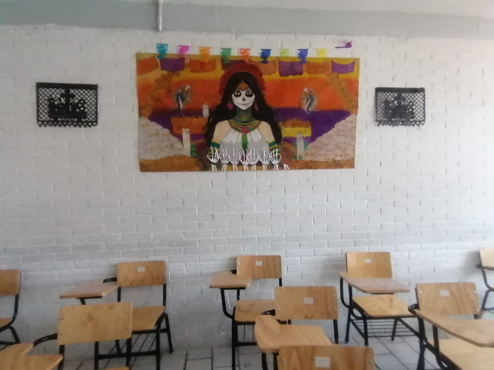

° Se desenvuelven en ambientes de aprendizaje apoyados con tecnologías
de la información y la comunicación..
|
° Planean de forma independiente sus horas de estudio.
|
° Tienen una formación flexible y acorde a sus necesidades y estilos de aprendizaje.
|
° Los Profesionales Técnicos y Profesionales Técnicos Bachiller que forma el CONALEP
cursan programas reconocidos por su calidad y basados en el Modelo Mexicano de Formación
Dual, por lo que son altamente valorados y competitivos en el mercado laboral.
|
° Realizan prácticas profesionales, en sitios de trabajo calificados donde
les ofrecen herramientas que les permitirán ser altamente competitivos.
|
|

|